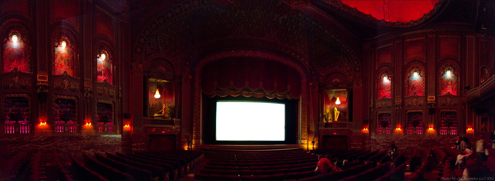
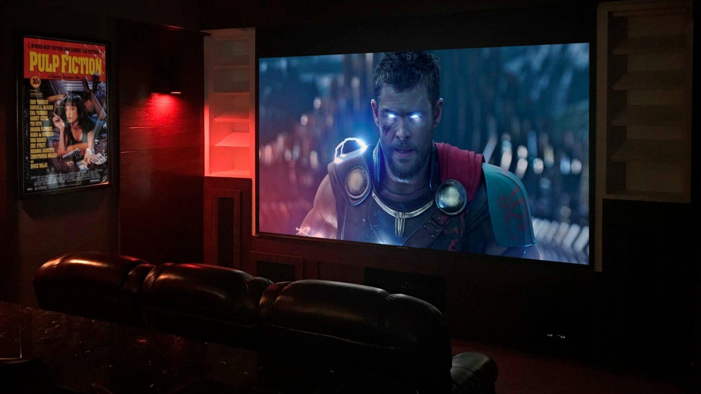

Ingest
Upload MP4, MP3, WAV, MKV… or paste any YouTube URL. We extract pristine audio & frames.
Drop any video, audio or YouTube link — VisionNote AI watches it for you and delivers a cinematic, chapter-perfect summary
Then ask anything. The RAG-powered assistant answers with timestamped precision.
Summary Accuracy
Faster Than Watching
Formats Supported

The Theater Of Understanding
Like a director's cut for knowledge — VisionNote AI distills hours of footage into moments that matter, scene by scene, insight by insight.
2-hr classes → 3-min briefs
Key takeaways, instantly
Paste a link. Done.
Action items extracted
Behind The Scenes
Upload MP4, MP3, WAV, MKV… or paste any YouTube URL. We extract pristine audio & frames.
Whisper-grade speech-to-text converts every spoken word into a rich, timestamped transcript.
LangChain agents chunk, embed & index content into a vector store — the brain of your video.
Get an executive summary, then interrogate the content — RAG retrieval grounds every answer.

The Feature Reel
Chapter-wise breakdowns with key quotes, themes & a TL;DR — structured like a screenplay.
Ask anything about the content. Answers are grounded in the actual transcript — zero hallucination.
Every insight links back to the exact moment in the video. Jump straight to the source.
Transcribe & summarize content in 50+ languages with automatic detection.
Meetings become checklists. Decisions, owners and deadlines extracted automatically.
Your files are processed in isolation and never used to train models.
Meet Your Co-Watcher
Powered by LangChain agents orchestrating LLMs over a retrieval-augmented memory of your media — it doesn't guess, it recalls.
Roll The Film
Paste a YouTube URL or upload a file — the premiere begins in seconds.
Works with youtube.com & youtu.be links · public videos only
How should VisionNote AI narrate your summary & chat?